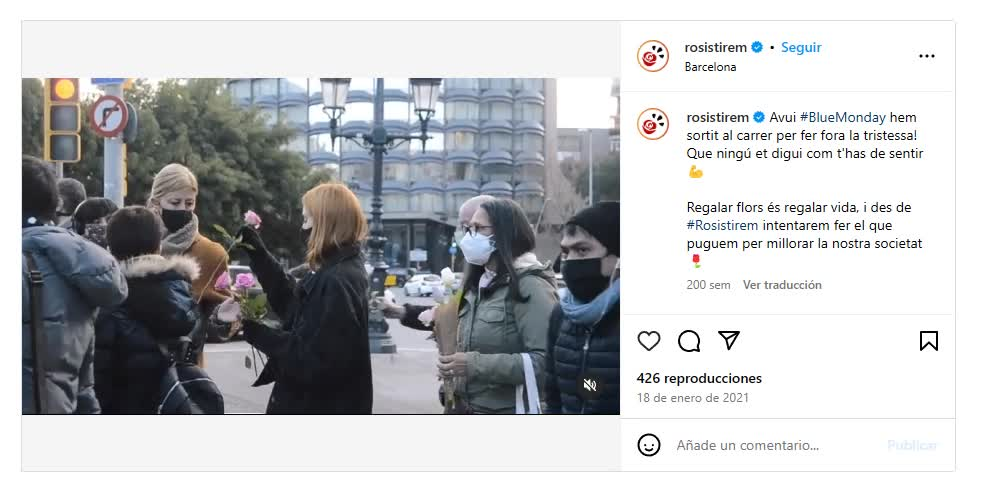
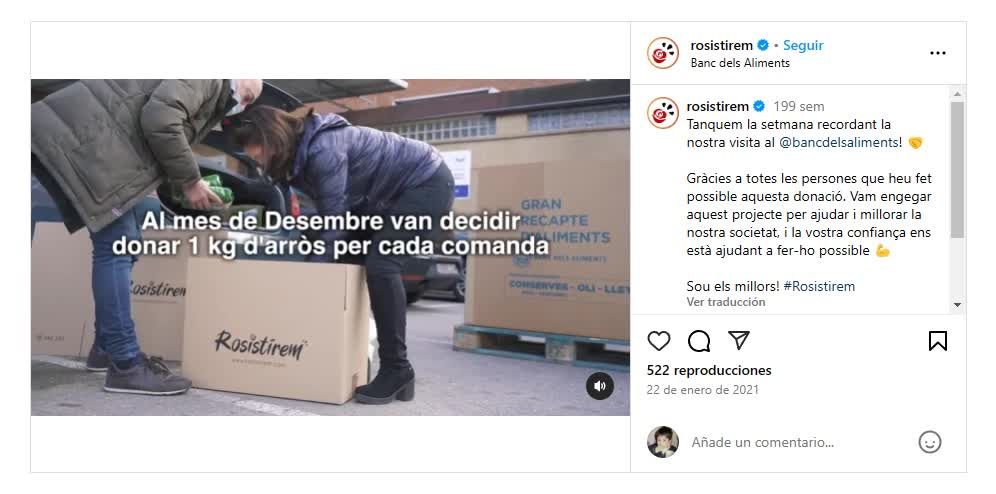

Rosistirem
Defined brand positioning for an ecommerce label competing against established players around Sant Jordi and Valentine's Day in Catalonia. Paired organic storytelling with paid campaigns focused on awareness and purchase intent, activating a community around the brand ahead of launch.
The challenge
Rosistirem needed to stand out during Sant Jordi and Valentine's Day, the two highest stakes seasonal windows in Catalonia, against florists and ecommerce competitors with much longer track records.
What I did
I split the strategy in two: organic content built the brand's story and identity over the weeks leading into each date, while paid campaigns focused specifically on awareness and purchase intent in the final push. The goal on the organic side was community first, not just reach.
Result
A visible, activated community around the brand ahead of each launch date, with the paid layer converting that attention into orders.
Work samples

